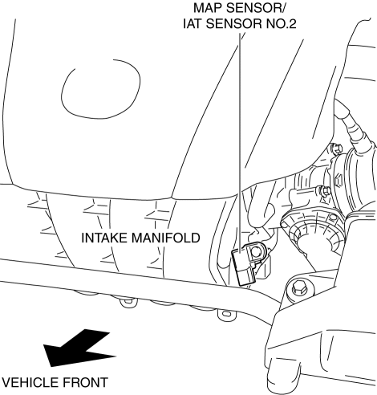
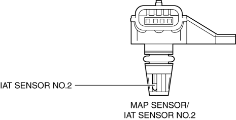

< Previous
Next >
2014 -
Mazda6 -
Engine
MANIFOLD ABSOLUTE PRESSURE (MAP) SENSOR [SKYACTIV-G 2.5]
Purpose/Function
-
Detects the intake air pressure introduced into the cylinder as basic information for mainly determining the fuel injection amount.
-
Detects the intake air pressure introduced into the cylinder and sends it to the PCM as an intake air pressure signal.
Construction
-
Installed on the intake manifold.

-
A sealant diaphragm has been adopted as the detecting element for detecting the intake air pressure.
-
IAT sensor No.2 is integrated.

Operation
MAP sensor characteristic

Fail-safe
|
|
| DTC No. | Fail-safe function |
| P0107:00 |
-
Estimates the MAP using the MAF sensor and the engine speed.
-
Restricts the upper limit of the engine speed.
-
Inhibits the evaporative purge control.
|
| P0108:00 |
-
Estimates the MAP using the MAF sensor and the engine speed.
-
Restricts the upper limit of the engine speed.
-
Inhibits the evaporative purge control.
|
< Previous
Next >
© 2012 Mazda North American Operations, U.S.A.